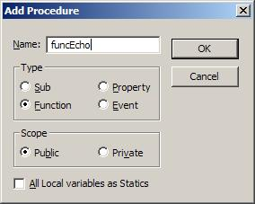

Making DLL's with VB for mIRC
This website it designed to help you all with creating DLL's with Visual Basic and using them with mIRC. I'm using VB version 6.0, but I think that version 5 will work also.
Ok first create a new program and select 'ActiveX DLL'
Now we have a project with an Class Module named Class1. Next, add a module and name it Module1. Add this code to Module1:
Sub
Main()
End Sub
Next, we need to change a few project properties. Click 'Project' and thenclick 'Project1 Properties'. Change the Startup Object to 'Sub Main' and change the Project Name to 'VBmIRC'. You can also fill out Project Description if you want, but it doesn't matter.
Next, we need to add the real code. Open the code window for the Class1 module. Click 'Tools'and 'Add Procedure'. We'll call our new function 'funcEcho'. Select 'Function' as type and make sure that its scope is Public.

Now the following code has been added into Class1:
Public Function
funcEcho()
End Function
For this example, our function will simply return a parameter in uppercase. So, we need toadd the right agrument info and code. We'll use the UCase() function. The final code will looklike this:
Public Function
funcEcho(text
As String
)
funcEcho = text & " in upper is " & UCase(text)
End Function
Next, the project needs to be complied into a dll. Click 'File', click 'Make VBmIRC.dll'.Save the file in c:\mirc\ (or whereever you have your mIRC files). Now we'll goto mIRC...We first need to register the dll with the mIRC command /comreg (You also may use regsvr32.exe if you want). Type in the status window:
/comreg c:\mirc\VBmIRC.dll
You should see this:
* Registered Com 'VBmIRC.dll'
Now we'll write an alias... for this example we'll use the commands /comopen, /comclose, and$com. You'll have to look at the help file to know exactly what all the paramenter are, but its not too hard to figure out. Here is the alias:
/comstuff {
/comopen comstuff VbmIRC.Class1
//var %result = $com(comstuff,funcEcho,1,bstr,cOmStUfF)
//echo -a Result: $com(comstuff).result
/comclose comstuff
}
The first line opens the com object with the name VBmIRC.Class1 and names the connection comstuff.(note that VBmIRC is the project name, and Class1 is the name of the class module. If the projectwas named Project1 and the module was named moo, then we would use: /comopen comstuff Project1.moo)Now we can use comstuff to make calles with $com. So now when we type /comstuff, this is was we get in the status window:
* Opened Com 'comstuff' (VbmIRC.Class1)
-
Result: cOmStUfF in upper is COMSTUFF
-
* Closed Com 'comstuff'
-
You can silence /comopen and /comclose with /.
So now you can create functions with Visual Basic, and use them with mIRC! A few reminders... youshould always check the value of $comerr after you call /comopen and /comclose, and you shouldcheck the value of $com after you call it (check the help file for details). I havent done so in my examples only because it's an example :)
eminence32.cjb.net / eminence